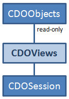

Understanding the Technical Background


Understanding the Technical Background |
|
This article explains the relationship between the main concepts that are exposed in the CDO User Interface and their underlying technical core concepts.
Table of Contents
Model elements are EObject EObjects.
EObjects are instances of concrete EClass EClasses, sometimes referred to as model element types.
EClasses are contained by EPackage EPackages, often referred to as meta models and sometimes less specifically as just models.
EPackages are registered in the Registry EPackage.Registry.
See Also:
The term "native model" refers to an EPackage that is generated with some CDO-specific options to fully exploit CDO's unprecedented characteristics with respect to scalability and performance.
Native model elements are lazily loaded when they are needed and automatically garbage-collected when they are no longer needed. Repositories with native model elements can scale to arbitrary sizes. Clients may not be able to load all objects of these large repositories at the same time, but they are able, for example, to iterate all objects of a large repository without worrying about memory management.
Technically native model elements are instances of the Java class CDOObjectImpl.
See Also:
Generating or regenerating an EPackage with the CDO-specific options (as explained in Native Models) is not always possible, for example if an EPackage has already been generated by a third party. In these cases the original generated EPackage can still be used with CDO; and is then referred to as a "legacy model".
The integration of legacy models with CDO is based on CDOLegacyAdapters.
Legacy model elements are not loaded lazily and not automatically garbage-collected.
It is not strictly necessary for an EPackage to be generated into Java code to be used with CDO. An EPackage can also be loaded dynamically at runtime (see Creating an Ecore Model for an example of the XML representation of an EPackage).
Technically dynamic model elements are instances of the Java class DynamicCDOObjectImpl.
Dynamic model elements share the characteristics of native model elements with respect to enhanced scalability and performance,
The term "repository" is a slightly ambiguous in CDO, as it may refer to both a server-side / core-level IRepository
and a client-side / UI-level CDORepository.
An IRepository is a "real" repository backed by a physical database (of one of various forms). In production
such repositories typically exist in a CDO server
that provides remote access through one or more ITCPConnectors.
The Operator's Guide explains how to configure and operate a CDO server.
A CDORepository is more of a configured connection to a "real" IRepository, which
is remembered across Eclipse sessions. In the case of a local repository (connection)
an internal IRepository is created with an H2 database stored on the local disk.
Internally a connected CDORepository maintains a single CDOSession to the underlying IRepository.
This session is shared by all views and transactions of all checkouts
from that CDORepository.
See Also:
A CDOCheckout is not necessarily a physical copy of a repository on the local disk (only offline checkouts
maintain a locally replicated repository copy). More generally they represent the following two aspects:
CDORepository as a way to use the internal CDOSession of that CDORepository.
CDOBranchPoint information, i.e., branch and time stamp,
that is needed to open CDOViews and CDOTransactions on the shared CDOSession of
the referenced CDORepository
A CDOCheckout internally maintains a main CDOView that is, for example, used to provide the resources and model elements that
are displayed in the Project Explorer. As objects that are provided by CDOViews are read-only
any modification action on these objects, for example as offered in the various context menus or triggered by drag and drop events,
operates on transactional copies of the objects in the context of a background thread.
Each model editor opened on a resource or model element of a CDOCheckout typically
(but depending on the implementation of that editor) maintains its own CDOTransaction to isolate changes and locks from other
views and transactions. Typically the save action of a model editor delegates directly to the commit
method of its associated CDOTransaction.
A CDOSession is the technical representation of a CDOProtocol connection to an IRepository.
On the transport level this connection is provided by an IConnector / IAcceptor pair.
See Also:
A CDOView is a technical facility that provides a client application with all the models and model elements in a repository
for a specific point in time and in a specific branch.
The model elements provided by a CDOView are read-only.

See Also:
A CDOTransaction is a technical facility that provides a client application with all the latest models
and model elements in a repository in a specific branch.
The model elements provided by a CDOTransaction are writable.
Changes to these model elements must be committed to make them
persistent in the repository and to distribute them to the views and transactions of other users.
See Also:
With CDO both EMF Compare editors and EMF Merge editors are instrumented to utilize an optimized CDO mechanism in order to compute
matches in a very efficient and scalable way. This mechanism consists of special client-server protocol
and remote database queries to determine and deliver the object IDs that are involved in all changes
between two different CDOBranchPoints. The response times depend on the implementation of the backend storage.
The response time of the default implementation, the DBStore, scales more
with the sizes of the stored meta models (i.e., the number of concrete EClass EClasses) than with the sizes of the stored models
(i.e., the number of EObject EObjects).